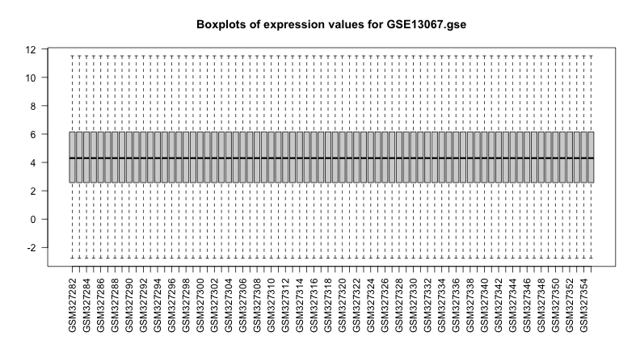
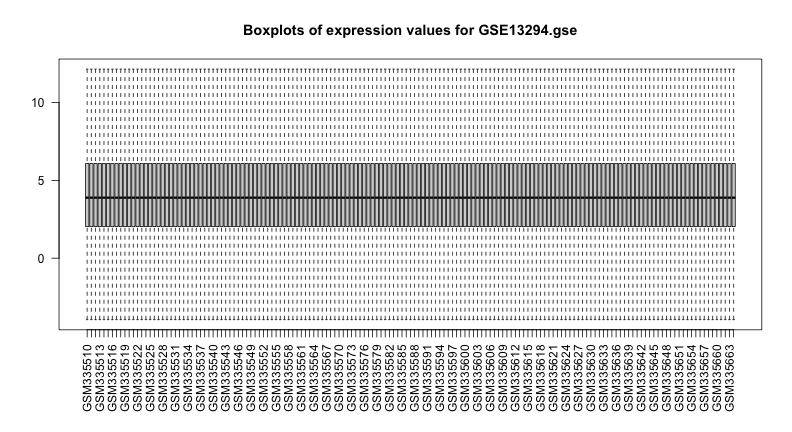
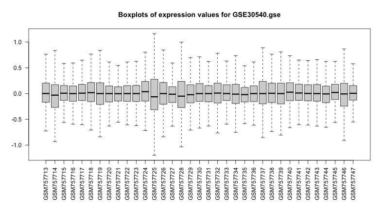
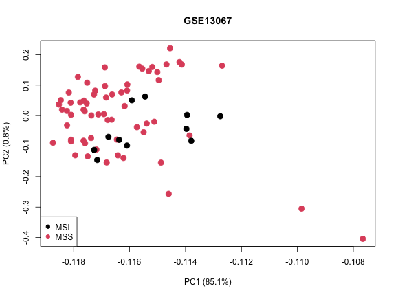
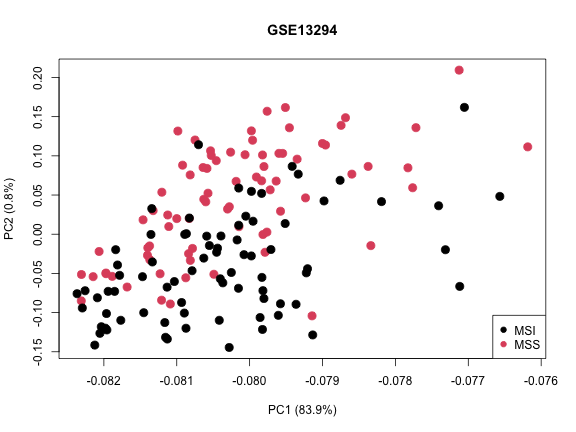
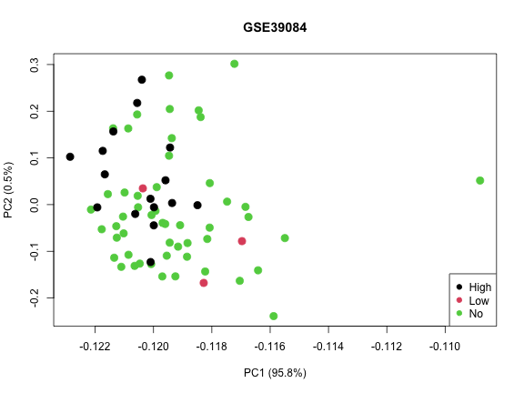
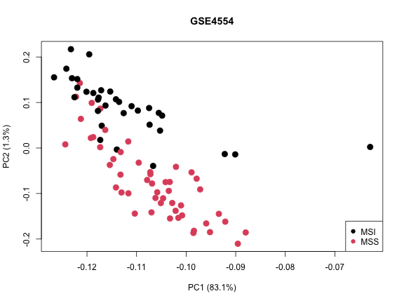

Section 2 Load Data
A search on the GEO web site1 identified the following datasets as potentialy useful for this exercise. All datasets have Affymetrix gene expression data for a number of samples annotated with msi status:
- GSE4554 [10]: [HG-U133_Plus_2] (84 CRC = 33 MSI + 51 MSS)
- GSE13067 [11]: [HG-U133_Plus_2] (74 CRC)
- GSE13294 [11]: [HG-U133_Plus_2] (89 MSI + 140 MSS + 58 MSI + 77 MSS)
- GSE24514 [12]: [HGU133A] (34 MSI,15 N)
- GSE30540 [13]: [HG-U133_Plus_2] (35 stage II and stage III)
- GSE35896 [14]: [HG-U133_Plus_2] (62 CRC samples)
- GSE75316 [15]: [HG-U133_Plus_2] (59 CRC samples)
- GSE39084 [16]: [HG-U133_Plus_2] (70 CRC samples)
- GSE26682 [17]: [HG-U133A], [HG-U133_Plus_2] (???)
- GSE14526 [18]: [HG-U133_Plus_2]
- GSE4045 [19]: [HG-U133A]
2.1 Download Datasets
This process is somewhat manual as the GEO data do not follow an entirely standard format. Each dataset will have to be downloaded one at a time and examined. Following this step, we can loop again through the datasets and store the necessary data in a uniform manner.
We can download data from GEO using function
getGEO from package GEOquery.
suppressMessages(require(GEOquery))
GSE_SET.vec <- c('GSE4554', 'GSE13067', 'GSE13294',
'GSE24514', 'GSE30540', 'GSE35896',
'GSE75316', 'GSE39084', 'GSE26682',
'GSE14526', 'GSE4045')
for(SET in GSE_SET.vec){
DnLd.tm <- startTimedMessage("Start of Download for ", SET)
Set.gse <- getGEO(SET, destdir=temp_DIR ,getGPL=F)
saveObj(paste0(SET,'.gse'), 'Set.gse')
stopTimedMessage(DnLd.tm)
}2.2 Peek into Datasets
# CHANGE THIS LINE TO CLEAR CACHE
suppressMessages(require(Biobase))
gseFile.vec <- list.files(file.path('RData'), 'gse$')
gsePhenoData.lst <- list()
gseDim.lst <- list()
for(gseF in gseFile.vec){
cat("\nPeek at ", gseF, '\n')
loadObj(gseF, 'Set.gse')
gseName <- sapply(strsplit(gseF, split='\\.'),'[',1)
print(dim(exprs(Set.gse[[1]])))
if(nrow(exprs(Set.gse[[1]])) == 0) next()
gseDim.lst[[gseName]] <- dim(exprs(Set.gse[[1]]))
#################################
# Expression Summary
if(F) {#SKIP
cat("\nExpression Summary:\n")
knitr::kable(t(apply(exprs(Set.gse[[1]]),2,summary))) %>%
kableExtra::kable_styling(full_width = F)
}@SKIP
#################################
# Expression Boxplots
old_par <- par(mar=par('mar')+c(2,0,0,0))
boxplot(exprs(Set.gse[[1]]), outline=F, las=2)
title(paste("Boxplots of expression values for", gseF))
par(old_par)
#################################
gsePhenoData.lst[[gseName]] <- phenoData(Set.gse[[1]])@data
if(F) {#SKIP
cat("\nSample Descriptions:\n")
print(knitr::kable(phenoData(Set.gse[[1]])@data) %>%
kableExtra::kable_styling(full_width = F))
}
}#SKIP##
## Peek at GSE13067.gse
## [1] 54675 74
##
## Peek at GSE13294.gse
## [1] 54675 155
##
## Peek at GSE14526.gse
## [1] 0 8
##
## Peek at GSE24514.gse
## [1] 22283 49##
## Peek at GSE26682.gse
## [1] 19473 176##
## Peek at GSE30540.gse
## [1] 54675 35
##
## Peek at GSE35896.gse
## [1] 54675 62##
## Peek at GSE39084.gse
## [1] 54675 70##
## Peek at GSE4045.gse
## [1] 22283 37##
## Peek at GSE4554.gse
## [1] 54675 84##
## Peek at GSE75316.gse
## [1] 54675 59
2.3 Dataset Cleaning
Following a peek into the datasets, we will proceed forward keeping only the
datasets which used the HG-U133_Plus_2 gene chip (N=54675 probe sets) and have
msi status:
* GSE13067, GSE13294, GSE35896, GSE39084, GSE4554
We exclude GSE75316 from the analysis as most of the samples are already part of GSE13067 and the latter is a larger set.
In the next chunk, we go through each of these datasets and store the gene expression and sample description data in a uniform manner to facilitate subsequent pooling. We also take a look at potential intra dataset batch effects.
# CHANGE THIS LINE TO CLEAR CACHE ..
suppressMessages(require(hgu133plus2.db))
for(SET in KEEP_GSE.vec){
cat("\n\nProcessing ", SET, '\n')
loadObj(paste0(SET, '.gse'), 'Set.gse')
###################################################################
# Expr - matrix
# - rows are features
# - columns are samples
###################################################################
Expr.mtx <- exprs(Set.gse[[1]])
if(SET %in% c('GSE4554', 'GSE4045')) Expr.mtx <- log2(pmax(Expr.mtx, min(Expr.mtx[Expr.mtx>0])))
###################################################################
# SampAttr - data.frame
# - rows are samples
# - columns are atttibutes of the samples
###################################################################
phenoData.frm <- phenoData(Set.gse[[1]])@data
if(nrow(phenoData.frm) != ncol(Expr.mtx)) stop("Expression-sampAttr Mismatch for ", SET)
MS_Status <- switch(SET,
GSE13067 = gsub(' ','',
sapply(strsplit(phenoData.frm$title, split=':'), function(x) x[2])),
GSE13294 = gsub(' ','',
sapply(strsplit(phenoData.frm$title, split=':'), function(x) x[2])),
GSE35896 = gsub(' ','',
sapply(strsplit(phenoData.frm$characteristics_ch1.7, split=':'), function(x) x[2])),
GSE39084 = gsub(' ','',
sapply(strsplit(phenoData.frm$characteristics_ch1.16, split=':'), function(x) x[2])),
GSE4554 = gsub(' ', '',
sapply(strsplit(as.character(phenoData.frm$description), split=','), function(x) x[1])),
"ERROR")
KEEP.ndx <- which(is.element(MS_Status, c('MSS', 'MSI', 'No', 'Low', 'High')))
sampAttr.frm <- data.frame(Sample_Id=rownames(phenoData.frm),
MS_Status=MS_Status,
row.names=rownames(phenoData.frm))[KEEP.ndx,]
Expr.mtx <- Expr.mtx[,rownames(sampAttr.frm)]
print(table(MS_Status[KEEP.ndx]))
###################################################################
# featureAttr - data.frame
# - rows of featureAttr match rows of Expr mtx
# - columns of featureAttr are atttibutes of the features - eg geneSymbol
###################################################################
# This deosn;t work!
#featureAttr.frm <- featureData(Set.gse[[1]])@data
#dim(featureAttr.frm)
#Symbol.vec <- mget(featureAttr.frm$ID, hgu133plus2SYMBOL)
#featureAttr.frm$Symbol <- Symbol.vec[rownames(featureAttr.frm)]
Symbol.vec <- mget(rownames(Expr.mtx), hgu133plus2SYMBOL)
featureAttr.frm <- data.frame(Symbol=unlist(Symbol.vec))
rownames(featureAttr.frm) <- rownames(Expr.mtx)
###################################################
# Save in arrayGeneExpr object
###################################################
if(sum(colnames(Expr.mtx) != rownames(sampAttr.frm))) stop("Column order error")
if(sum(rownames(Expr.mtx) != rownames(featureAttr.frm))) stop("Row order error")
Set.arrayGeneExpr <- list(exprData=NA, exprType=NA, Norm=NA,
sampAttr=NA, featureAttr=NA)
class(Set.arrayGeneExpr) <- "arrayGeneExpr"
Set.arrayGeneExpr$exprData <- Expr.mtx
Set.arrayGeneExpr$sampAttr <- sampAttr.frm
Set.arrayGeneExpr$featureAttr <- featureAttr.frm
saveObj(paste0(SET,'.arrayGeneExpr'), 'Set.arrayGeneExpr')
######################################################
# Look for intra-set batch effects
######################################################
Expt.prcomp <- prcomp(Expr.mtx)
plot(x=Expt.prcomp$rotation[,'PC1'],
xlab=paste0('PC1 (', round(100*summary(Expt.prcomp)$importance[2,"PC1"],1),'%)'),
y=Expt.prcomp$rotation[,'PC2'],
ylab=paste0('PC2 (', round(100*summary(Expt.prcomp)$importance[2,"PC2"],1),'%)'),
pch=19, cex=1.5, col=as.numeric(as.factor(sampAttr.frm$MS_Status)))
title(SET)
legend(ifelse(SET %in% c('GSE13067', 'GSE35896'), 'bottomleft', 'bottomright'),
legend=levels(as.factor(sampAttr.frm$MS_Status)),
col=1:length(levels(as.factor(sampAttr.frm$MS_Status))),
pch=19)
} ##
##
## Processing GSE13067
##
## MSI MSS
## 11 63
##
##
## Processing GSE13294
##
## MSI MSS
## 78 77
##
##
## Processing GSE35896
##
## MSI MSS
## 5 56##
##
## Processing GSE39084
##
## High Low No
## 16 3 51
##
##
## Processing GSE4554
##
## MSI MSS
## 33 50
2.4 Data Pooling
When pooling data from different sources, we should make sure not to introduce batch effects into the mix. In the first instance we will simply pool the data sets together, and apply quantile normalization. This can be seen as a very weak form of batch effect correction and is a minimal requirement. For a more careful way to remove batch effects and other unwanted variation see Gagnon-Bartsch (2012) [5] and Molania et al.(2019) [6].
###############################
# Get feature attributes from one of the arrayGeneExpr objects
###############################
loadObj(paste0(KEEP_GSE.vec[1],'.arrayGeneExpr'), 'Set.arrayGeneExpr')
featureAttr.frm <- Set.arrayGeneExpr$featureAttr
featureAttr.frm$Symbol[is.na(featureAttr.frm$Symbol)] <-
rownames(featureAttr.frm)[is.na(featureAttr.frm$Symbol)]
featureAttr.frm[1:5,,drop=F]## Symbol
## 1007_s_at 1007_s_at
## 1053_at RFC2
## 117_at HSPA6
## 121_at PAX8
## 1255_g_at GUCA1A geneId.vec <- rownames(featureAttr.frm)
###############################
###############################
# Pool the expression data
###############################
PooledExpr.mtx <- do.call('cbind', lapply(KEEP_GSE.vec,
function(SET) {
loadObj(paste0(SET,'.arrayGeneExpr'), 'Set.arrayGeneExpr')
Set.arrayGeneExpr$exprData[geneId.vec,]
}))
#dim(PooledExpr.mtx)
#PooledExpr.mtx[1:5, 1:5]
# Apply quantile normalization
median.Expr.vec <- apply(apply(PooledExpr.mtx,2,sort), 1, median)
#summary(median.Expr.vec)
PooledNormedExpr.mtx <- apply(PooledExpr.mtx, 2, function(x)
median.Expr.vec[rank(x)])
rownames(PooledNormedExpr.mtx) <- rownames(PooledExpr.mtx)
#summary(apply(PooledExpr.mtx, 2, mean))
#summary(apply(PooledNormedExpr.mtx, 2, mean))
###############################
# Pool the sample attribute data
###############################
PooledSampAttr.frm <- do.call('rbind', lapply(KEEP_GSE.vec,
function(SET) {
#cat(SET,'\n')
loadObj(paste0(SET,'.arrayGeneExpr'), 'Set.arrayGeneExpr')
data.frame(GSE=rep(SET,nrow(Set.arrayGeneExpr$sampAttr)),
Sample_Id=Set.arrayGeneExpr$sampAttr$Sample_Id,
MS_Status=Set.arrayGeneExpr$sampAttr$MS_Status,
row.names=rownames(Set.arrayGeneExpr$sampAttr))
}))
#dim(PooledSampAttr.frm)
#PooledSampAttr.frm[1:5, ]
# Assemble arrayGeneExpr object for pooled data and save
GSEPool.arrayGeneExpr <- list(exprData=NA, exprType=NA, Norm=NA,
sampAttr=NA, featureAttr=NA)
class(GSEPool.arrayGeneExpr) <- "arrayGeneExpr"
GSEPool.arrayGeneExpr$exprData <- PooledNormedExpr.mtx
GSEPool.arrayGeneExpr$exprType <- 'MAS5_RMA'
GSEPool.arrayGeneExpr$Norm <- 'Quantile'
GSEPool.arrayGeneExpr$sampAttr <- PooledSampAttr.frm
GSEPool.arrayGeneExpr$featureAttr <- featureAttr.frm
save(GSEPool.arrayGeneExpr, file=file.path('RData','GSEPool.arrayGeneExpr')) loadObj('GSEPool.arrayGeneExpr', 'GSEPool.arrayGeneExpr')
PooledNormedExpr.mtx <- GSEPool.arrayGeneExpr$exprData
######################################################
# Look for inter-set batch effects
######################################################
Expt.prcomp <- prcomp(PooledNormedExpr.mtx)
par(mfrow=c(1,2), mar=c(3,3,2,1), oma=c(0,0,2,0))
# Annotate with Batch
plot(x=Expt.prcomp$rotation[,'PC1'],
xlab=paste0('PC1 (', round(100*summary(Expt.prcomp)$importance[2,"PC1"],1),'%)'),
y=Expt.prcomp$rotation[,'PC2'],
ylab=paste0('PC2 (', round(100*summary(Expt.prcomp)$importance[2,"PC2"],1),'%)'),
pch=19, cex=1.5, col=as.numeric(as.factor(PooledSampAttr.frm$GSE)))
title('Color is Batch')
legend.tbl <- table(as.factor(PooledSampAttr.frm$GSE),
as.numeric(as.factor(PooledSampAttr.frm$GSE)))
legend('topright', pch=19, cex=1.5,
legend=rownames(legend.tbl),
col=as.numeric(colnames(legend.tbl)))
# Annotate with MS_Status
MSS_MSI <- as.factor(ifelse(is.element(PooledSampAttr.frm$MS_Status, c('MSS', 'No')),
'MSS','MSI'))
plot(x=Expt.prcomp$rotation[,'PC1'],
xlab=paste0('PC1 (', round(100*summary(Expt.prcomp)$importance[2,"PC1"],1),'%)'),
y=Expt.prcomp$rotation[,'PC2'],
ylab=paste0('PC2 (', round(100*summary(Expt.prcomp)$importance[2,"PC2"],1),'%)'),
pch=19, cex=1.5, col=as.numeric(as.factor(MSS_MSI)))
title('Color is MSS_MSI')
legend.tbl <- table(as.factor(MSS_MSI),
as.numeric(as.factor(MSS_MSI)))
legend('topright', pch=19, cex=1.5,
legend=rownames(legend.tbl),
col=as.numeric(colnames(legend.tbl)))
mtext(side=3, outer=T, cex=1.25, "Pooled GSE Data - Before Batch Correction")Figure 2.1: Pooled GSE Data - Before Batch Correction
2.5 Batch Correction
We see a definite batch effect in the PCA plot based on the pooled expression data. The clustering is along probe set reduction method, RMA vs MAS 5.0. One should really go back to the cel files and re-analyze all samples using one probe set reduction method. For the sake of illustration, we will instead try to remove this effect using a batch-effect correction method.
Given that we dont have a good set of control genes as required by the RUV method, well use ComBat` from the SVA package.
Alternatively, we could keep keep the two sets of data, those summarized using RMA and those summarized using MAS 5.0, separate, alternating using one set for model selection and fitting and the other for testing. This would provide a strong test of the generalizability and robustness of the results.
suppressMessages(require(sva))
load(file=file.path('RData','GSEPool.arrayGeneExpr'))
Expr.mtx <- GSEPool.arrayGeneExpr$exprData
sampAttr.frm <- GSEPool.arrayGeneExpr$sampAttr
# Applying theComBatfunction to adjust for known batches
# Note: we could here use a binray batch: RMA vs MAS5.
batch <- as.factor(sampAttr.frm$GSE)
with(sampAttr.frm, table(GSE, MS_Status))## MS_Status
## GSE High Low MSI MSS No
## GSE13067 0 0 11 63 0
## GSE13294 0 0 78 77 0
## GSE35896 0 0 5 56 0
## GSE39084 16 3 0 0 51
## GSE4554 0 0 33 50 0 MSS <- as.factor(is.element(sampAttr.frm$MS_Status, c('MSS', 'No')))
modcombat = model.matrix(~ MSS)
combat_edata = ComBat(dat=Expr.mtx,
batch=batch,
mod=modcombat,
par.prior=TRUE,
prior.plots=FALSE)## Found5batches## Adjusting for1covariate(s) or covariate level(s)## Standardizing Data across genes## Fitting L/S model and finding priors## Finding parametric adjustments## Adjusting the Data GSEPool.arrayGeneExpr$exprDataBatchAdj <- combat_edata
save(GSEPool.arrayGeneExpr, file=file.path('RData','GSEPool.arrayGeneExpr')) loadObj('GSEPool.arrayGeneExpr', 'GSEPool.arrayGeneExpr')
######################################################
# Look for inter-set batch effects
######################################################
Expt.prcomp <- prcomp(GSEPool.arrayGeneExpr$exprDataBatchAdj)
par(mfrow=c(1,2), mar=c(3,3,2,1), oma=c(0,0,2,0))
# Annotate with Batch
plot(x=Expt.prcomp$rotation[,'PC1'],
xlab=paste0('PC1 (', round(100*summary(Expt.prcomp)$importance[2,"PC1"],1),'%)'),
y=Expt.prcomp$rotation[,'PC2'],
ylab=paste0('PC2 (', round(100*summary(Expt.prcomp)$importance[2,"PC2"],1),'%)'),
pch=19, cex=1.5, col=as.numeric(as.factor(sampAttr.frm$GSE)))
title('Color is Batch')
legend.tbl <- table(as.factor(sampAttr.frm$GSE),
as.numeric(as.factor(sampAttr.frm$GSE)))
SKIP <- function() {
legend('topright', pch=19, cex=1.5,
legend=rownames(legend.tbl),
col=as.numeric(colnames(legend.tbl)))
}#SKIP
# Annotate with MS_Status
MSS_MSI <- as.factor(ifelse(is.element(sampAttr.frm$MS_Status, c('MSS', 'No')),
'MSS','MSI'))
plot(x=Expt.prcomp$rotation[,'PC1'],
xlab=paste0('PC1 (', round(100*summary(Expt.prcomp)$importance[2,"PC1"],1),'%)'),
y=Expt.prcomp$rotation[,'PC2'],
ylab=paste0('PC2 (', round(100*summary(Expt.prcomp)$importance[2,"PC2"],1),'%)'),
pch=19, cex=1.5, col=as.numeric(as.factor(MSS_MSI)))
title('Color is MSS_MSI')
legend.tbl <- table(as.factor(MSS_MSI),
as.numeric(as.factor(MSS_MSI)))
legend('topright', pch=19, cex=1.5,
legend=rownames(legend.tbl),
col=as.numeric(colnames(legend.tbl)))
mtext(side=3, outer=T, cex=1.25, "Pooled GSE Data - After Batch Correction")Figure 2.2: Pooled GSE Data - After Batch Correction
Visual inspection of the effect of the batch correction transformation is a minimal requirement for verification. One can do a better job at quantifying the effect of batch correction, especially of the data set contains control features and control samples. See Lazar et.al. [3] for a discussion of batch effect removal assessment.
2.6 Separate Data Set into Train and Test Subsets
We will separate the data set into Train and Test subsets here, before any other filtering or data manipulation. In particular, since we will be interested in evaluating the effect of gene or probe set selection, this selection must be made on the basis of the training subset only. This is done as a precautionary measure as gene selection based on a variability filter is is done here is unlikely to have an effect on sample classification performance.
Take note that the expression matrices that we save here will
be transposed with genes in columns. This is done to accomodate
the data format expected by the caret package.
# CHANGE THIS LINE TO CLEAR CACHE
suppressMessages(require(caret))
# Load expression data object
load(file.path('RData','GSEPool.arrayGeneExpr'))
# Get expression data matrix
Expr.mtx <- t(GSEPool.arrayGeneExpr$exprDataBatchAdj)
# Use gene names where possible
colnames(Expr.mtx) <-
make.names(GSEPool.arrayGeneExpr$featureAttr[colnames(Expr.mtx),], unique=T)
# Keep map
GeneNameMap.vec <- rownames(GSEPool.arrayGeneExpr$exprDataBatchAdj)
names(GeneNameMap.vec) <- colnames(Expr.mtx)
#GeneNameMap.vec[1:5]
save(GeneNameMap.vec, file=file.path('RData', 'GeneNameMap.vec'))
# Get sample attributes
sampAttr.frm <- GSEPool.arrayGeneExpr$sampAttr
DataSource.vec <- sampAttr.frm$GSE
names(DataSource.vec) <- rownames(sampAttr.frm)
Label.vec <- ifelse(is.element(sampAttr.frm$MS_Status, c('MSS', 'No')), 'MSS','MSI')
names(Label.vec) <- rownames(sampAttr.frm)
rm(GSEPool.arrayGeneExpr)
# split Into Train and Test
set.seed(12379)
inTrain <- createDataPartition(y=Label.vec, p=0.75, list=F)
Train.Expr.mtx <- Expr.mtx[inTrain,]
Train.Label.vec <- Label.vec[inTrain]
Train.DataSource.vec <- DataSource.vec[inTrain]
Test.Expr.mtx <- Expr.mtx[-inTrain,]
Test.Label.vec <- Label.vec[-inTrain]
Test.DataSource.vec <- Label.vec[-inTrain]
knitr::kable(rbind(Train=dim(Train.Expr.mtx),
Test=dim(Test.Expr.mtx))) %>%
kableExtra::kable_styling(full_width = F)| Train | 333 | 54675 |
| Test | 110 | 54675 |
knitr::kable(rbind(
Train=table(Train.Label.vec)/length(Train.Label.vec),
Test=table(Test.Label.vec)/length(Test.Label.vec))) %>%
kableExtra::kable_styling(full_width = F)| MSI | MSS | |
|---|---|---|
| Train | 0.3303303 | 0.6696697 |
| Test | 0.3272727 | 0.6727273 |
# Save these
save(Train.Expr.mtx, file=file.path('RData', 'Train.Expr.mtx'))
save(Test.Expr.mtx, file=file.path('RData', 'Test.Expr.mtx'))
save(Train.Label.vec, file=file.path('RData', 'Train.Label.vec'))
save(Test.Label.vec, file=file.path('RData', 'Test.Label.vec'))
save(Train.DataSource.vec, file=file.path('RData', 'Train.DataSource.vec'))
save(Test.DataSource.vec, file=file.path('RData', 'Test.DataSource.vec'))2.7 Save Gene Sets
Save gene sets selected by overall variability in training samples. In the analysis that follows we will use the top 30% most variable genes.
Note that we select genes based on variability in the entire training
dataset which includes data from different GEO data sets. This selection
may favor the inclusion of genes which differ across the different
data sets due to technical reasons. An alternative selection would be to
to select genes based on within data set variability. This could be
implemented by filtering based on the residual variance of an
ANOVA model Expr ~ GSE fitted to the gene expression data.
# CHANGE THIS LINE TO CLEAR CACHE
load(file.path('RData', 'Train.Expr.mtx'))
# Identify and remove low variance columns
Train.Expr.mad.vec <- apply(Train.Expr.mtx,2,mad)
#summary(Train.Expr.mad.vec)
TopVar.cols <- which(Train.Expr.mad.vec > quantile(Train.Expr.mad.vec, prob=(100-VAR_FILTER)/100))
Train.TopVarGenes.vec <- colnames(Train.Expr.mtx)[TopVar.cols]
#length(Train.TopVarVarGenes.vec)
saveObj(paste0('Train.',SelGenes,'.vec'), 'Train.TopVarGenes.vec')
# also save top 25 and top 50 - Nawh!References
3. Lazar, C., Meganck, S., Taminau, J., Steenhoff, D., Coletta, A., Molter, C., Weiss-Sols, D.Y., Duque, R., Bersini, H., and Now, A. Batch effect removal methods for microarray gene expression data integration: A survey. Briefings in Bioinformatics 14, 469490. Available at: http://dx.doi.org/10.1093/bib/bbs037.
5. Gagnon-Bartsch, J.A., and Speed, T.P. Using control genes to correct for unwanted variation in microarray data. Biostatistics 13, 539552. Available at: http://dx.doi.org/10.1093/biostatistics/kxr034.
6. Molania, R., Gagnon-Bartsch, J.A., Dobrovic, A., and Speed, T.P. A new normalization for nanostring nCounter gene expression data. Nucleic acids research 47, 60736083. Available at: https://pubmed.ncbi.nlm.nih.gov/31114909.
10. Watanabe, T., Kobunai, T., Toda, E., Yamamoto, Y., Kanazawa, T., Kazama, Y., Tanaka, J., Tanaka, T., Konishi, T., and Okayama, Y. et al. Distal colorectal cancers with microsatellite instability (msi) display distinct gene expression profiles that are different from proximal msi cancers. Cancer Research 66, 9804. Available at: http://cancerres.aacrjournals.org/content/66/20/9804.abstract.
11. Jorissen, R.N., Lipton, L., Gibbs, P., Chapman, M., Desai, J., Jones, I.T., Yeatman, T.J., East, P., Tomlinson, I.P.M., and Verspaget, H.W. et al. DNA copy-number alterations underlie gene expression differences between microsatellite stable and unstable colorectal cancers. Clinical Cancer Research 14, 8061. Available at: http://clincancerres.aacrjournals.org/content/14/24/8061.abstract.
12. Alhopuro, P., Sammalkorpi, H., Niittymki, I., Bistrm, M., Raitila, A., Saharinen, J., Nousiainen, K., Lehtonen, H.J., Helivaara, E., and Puhakka, J. et al. (2012). Candidate driver genes in microsatellite-unstable colorectal cancer. International Journal of Cancer 130, 15581566. Available at: http://dx.doi.org/10.1002/ijc.26167.
13. Watanabe, T., Kobunai, T., Yamamoto, Y., Matsuda, K., Ishihara, S., Nozawa, K., Yamada, H., Hayama, T., Inoue, E., and Tamura, J. et al. Chromosomal instability (cin) phenotype, cin high or cin low, predicts survival for colorectal cancer. Journal of Clinical Oncology 30, 22562264. Available at: https://doi.org/10.1200/JCO.2011.38.6490.
14. Schlicker, A., Beran, G., Chresta, C.M., McWalter, G., Pritchard, A., Weston, S., Runswick, S., Davenport, S., Heathcote, K., and Castro, D.A. et al. (2012). Subtypes of primary colorectal tumors correlate with response to targeted treatment in colorectal cell lines. BMC Medical Genomics 5, 6666. Available at: http://www.ncbi.nlm.nih.gov/pmc/articles/PMC3543849/.
15. Barras, D., Missiaglia, E., Wirapati, P., Sieber, O.M., Jorissen, R.N., Love, C., Molloy, P.L., Jones, I.T., McLaughlin, S., and Gibbs, P. et al. \(<\)em\(>\)BRAF\(<\)/em\(>\) \(<\)em\(>\)V600E\(<\)/em\(>\) mutant colorectal cancer subtypes based on gene expression. Clinical Cancer Research 23, 104. Available at: http://clincancerres.aacrjournals.org/content/23/1/104.abstract.
16. Kirzin, S., Marisa, L., Guimbaud, R., De Reynies, A., Legrain, M., Laurent-Puig, P., Cordelier, P., Pradre, B., Bonnet, D., and Meggetto, F. et al. (2014). Sporadic early-onset colorectal cancer is a specific sub-type of cancer: A morphological, molecular and genetics study. PLoS ONE 9, e103159. Available at: http://www.ncbi.nlm.nih.gov/pmc/articles/PMC4118858/.
17. Schmit, S.L., Gollub, J., Shapero, M.H., Huang, S.-C., Rennert, H.S., Finn, A., Rennert, G., and Gruber, S.B. MicroRNA polymorphisms and risk of colorectal cancer. Cancer Epidemiology Biomarkers & Prevention 24, 65. Available at: http://cebp.aacrjournals.org/content/24/1/65.abstract.
18. Yagi, K., Akagi, K., Hayashi, H., Nagae, G., Tsuji, S., Isagawa, T., Midorikawa, Y., Nishimura, Y., Sakamoto, H., and Seto, Y. et al. Three dna methylation epigenotypes in human colorectal cancer. Clinical Cancer Research 16, 21. Available at: http://clincancerres.aacrjournals.org/content/16/1/21.abstract.
19. Laiho, P., Kokko, A., Vanharanta, S., Salovaara, R., Sammalkorpi, H., Jarvinen, H., Mecklin, J.-P., Karttunen, T.J., Tuppurainen, K., and Davalos, V. et al. Serrated carcinomas form a subclass of colorectal cancer with distinct molecular basis. Oncogene 26, 312320. Available at: http://dx.doi.org/10.1038/sj.onc.1209778.